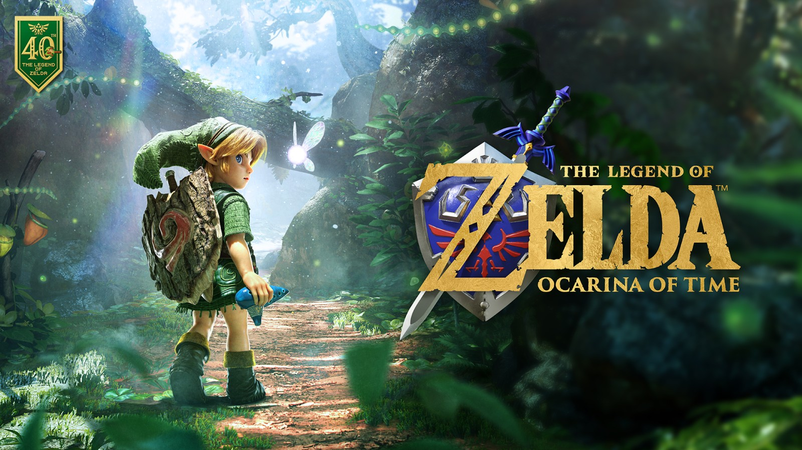

Mi expectativa sobre el remake de Zelda: Ocarina of Time

Sin palabras. Aún no me creo que van a rehacer esta obra maestra. Cuando escuché el rumor hace mucho, me entró un miedo terrible. Ocarina of Time para mí es algo inexplicable: me tomó casi 22 años terminarlo de cierta forma. Iba y volvía cada cierto tiempo para jugarlo, y cada vez avanzaba otro poco (todo esto en un emulador). Cuando por fin lo terminé, no pude evitar llorar como un bebé; sentí que dejé ir algo que llevaba atado desde hace mucho. La historia del juego me pegó mucho en esa última vuelta: estaba en un momento complicado en mi vida y, casi como si fuera el destino, lo terminé.
Mi miedo era que hicieran un cambio para mal; no me gustaría que arruinaran algo tan sagrado. No solo para mí, creo que hablo por todos los fans de la saga: no queremos que la cague Nintendo. Lo bueno es que Aonuma está metido de lleno en el desarrollo, y ya pudiendo ver el tráiler se me quitó el miedo. Puedo ver que le metieron mucho cariño, no tengo dudas de que estará a la altura, y no puedo esperar a revivir la pelea con Dark Link.
¿Pero podrá superar al original? Eso dependerá de que los cambios se mantengan orgánicos, tal como se vio en lo que enseñaron, y que lo nuevo —que evidentemente será mucho, o eso espero— sume bastante y mejore en general la experiencia. Estamos hablando del remake del mejor juego de la historia. De tantos remakes que han salido estos últimos años, este era el indicado; es hora de que las nuevas generaciones vean lo que se han estado perdiendo.
Sin más, espero que Nintendo no la cague y nos cierre la boca a todos. Esperen mi reseña para cuando salga, que ya falta casi nada de tiempo. Para comprarlo en preventa, vayan al siguiente enlace: Preventa oficial de Zelda: Ocarina of Time Remake en Nintendo eShop.